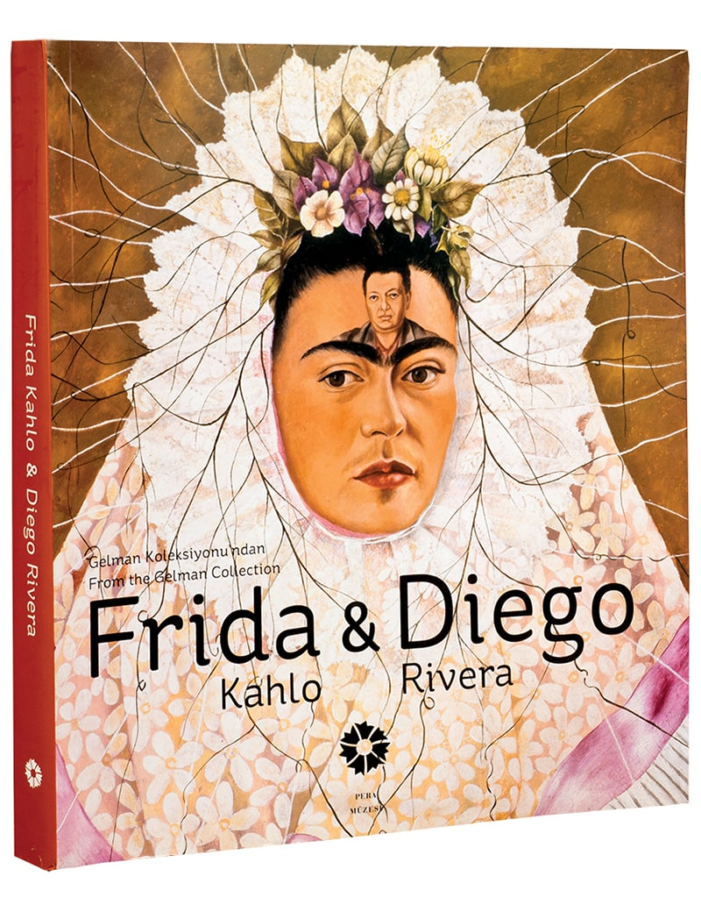
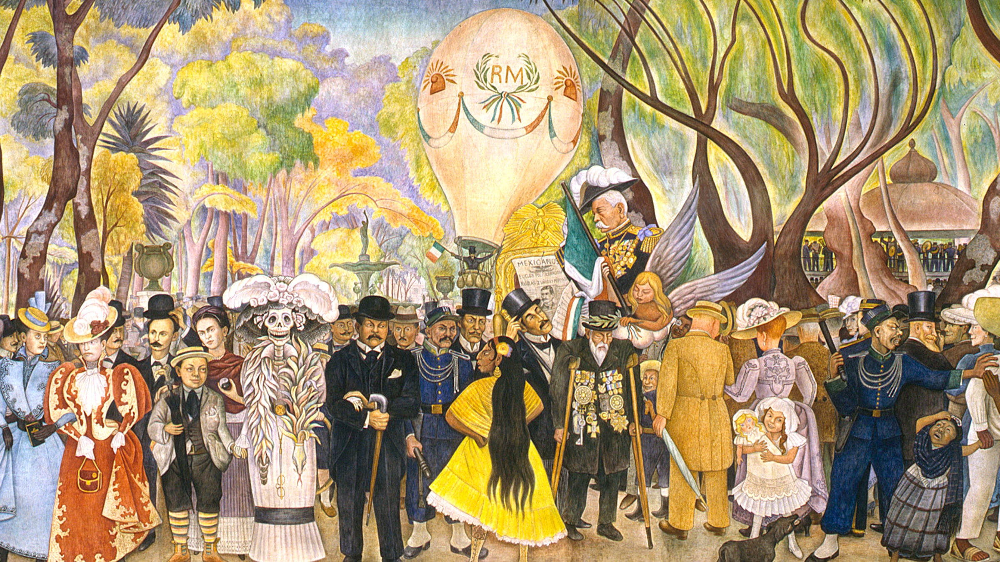
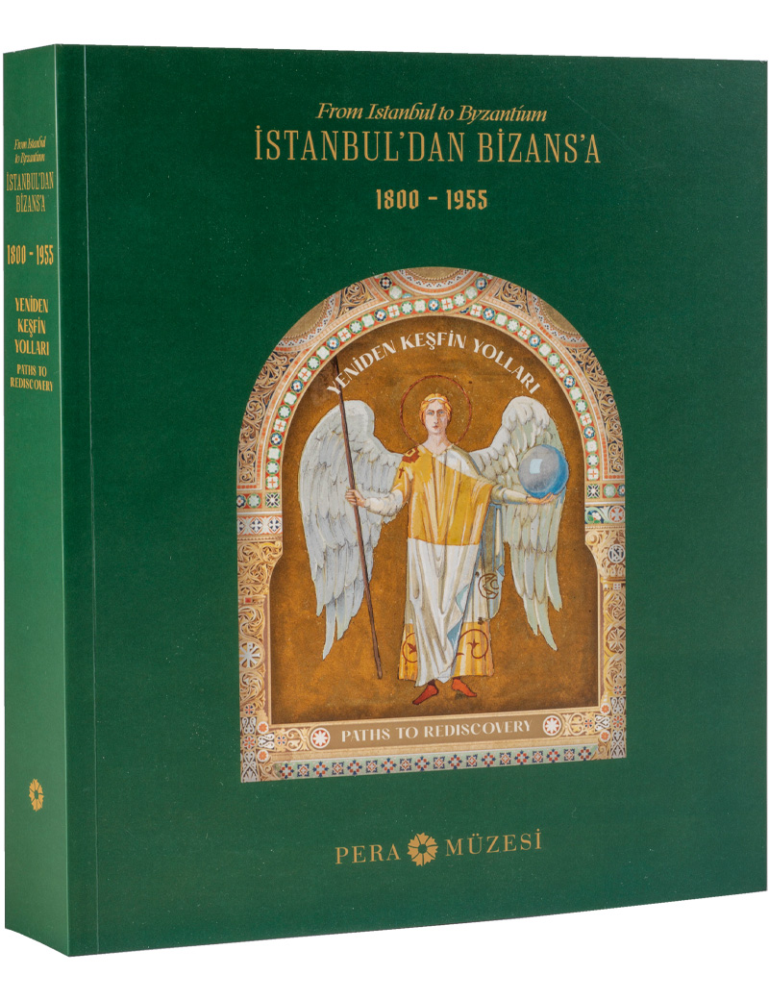
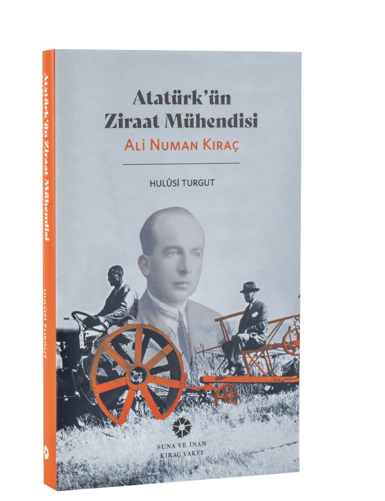

PERA MÜZESİ |
|
ZİYARET AJANDA SANAT PERA ÖĞRENME PERA FİLM YAYINLAR RESİMLER KEŞFET!
|
|
|
Frida Kahlo ve Diego Rivera Gelman Koleksiyonu'ndan |
|
|  |
Pera Müzesi, 20. yüzyıl sanatının Meksika ve dünyadaki en çarpıcı figürlerinden ikisini, Frida Kahlo ve Diego Rivera'yı sanatseverlerle buluşturuyor.Yapıtları kadar özgün karakterleri, yaşam öyküleri ve merak uyandıran birliktelikleriyle de ilgi uyandıran sanatçılar, 40 yapıttan oluşan Frida Kahlo ve Diego Rivera: Gelman Koleksiyonu’ndan sergisiyle Türkiye'de ilk kez Pera Müzesi'ne konuk oldular. Dünya çapındaki bu ünlü koleksiyon, Meksika dışında daha önce çok az sayıdaki sergide izleyiciyle buluşabilmişti. Yaşamlarının önemli bir bölümünü Meksika'da geçirmiş koleksiyoner bir çift olan Jacques ve Natasha Gelman'ın 20. yüzyıl Meksika sanatına da odaklanan geniş koleksiyonunda yer alan yapıtlar, Frida Kahlo'nun sanatsal kişiliğinin derin izlerini yansıtan otoportreleri ile Diego Rivera'nın az sayıdaki tuval resmi örnekleri bu katalogda yer alıyor. Katalogda, Berlin ve Viyana'da düzenlenen ve 2010 yılına damgasını vuran Frida Kahlo Retrospektifi'nin en gözde Kahlo yapıtları da yer alıyor Yayın Yılı:2.Baskı, Şubat 2011 Sayfa Sayısı: 253 ISBN: 978-975-9123-81-9 |
| Süreli Sergi
|
|
| Frida Kahlo ve Diego Rivera
Gelman Koleksiyonu'ndan Frida Kahlo ve Diego Rivera sergisi, 20. yüzyıl sanatının Meksika ve dünyadaki en çarpıcı figürlerinden ikisini, Frida Kahlo ve Diego Rivera'yı sanatseverlerle buluşturdu Sergi hakkında daha fazla bilgi için tıklayınız. |
 |
| İlginizi Çekebilir
|
|
|  |  |
| İstanbul’dan Bizans’a Yeniden Keşfin Yolları, 1800-1955 |
Atatürk'ün Ziraat Mühendisi Ali Numan Kıraç Hulusi Turgut |
|
ZİYARET SAATLERİ Salı - Cumartesi 10.00 - 19.00 Cuma 10.00 - 22.00 Pazar 12.00 - 18.00 Müze Pazartesi günü kapalıdır. Genç Çarşamba Çarşamba günleri öğrenciler müzeyi ücretsiz ziyaret edebilir. GİRİŞ ÜCRETLERİ Tam: 200 TL İndirimli: 100 TL Grup: 150 TL (toplu 10 bilet ve üstü) |
|
Hakkımızda İletişim Açık Pozisyonlar Mekan Kiralama Basın Engelli Ziyaretçiler Sıkça Sorulan Sorular KVKK |

.png)
.png)